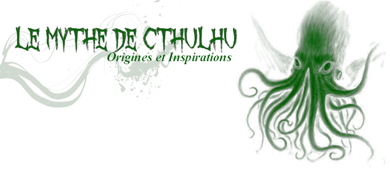
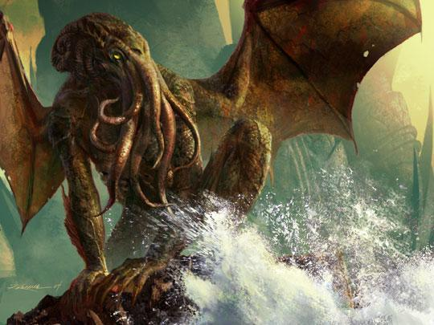
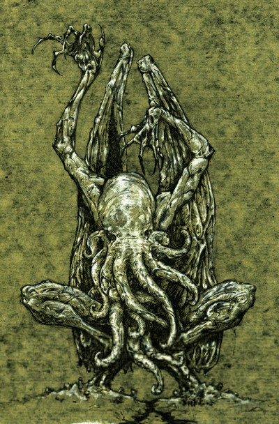
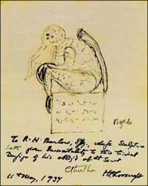

 |
Cthulhu
L'Histoire de Cthulhu
Cthulhu est une sorte de dieu extraterrestre venant d'une galaxie lointaine et arrivé sur Terre il y a plusieurs milliers d'années. Il était vénéré par des peuples de créatures dégénérées et laides. Il a été banni du système de Xoth (constellation) par les Great Old Ones (Les Dieux Très Anciens) et est à présent condamné dans son tombeau au coeur du Pacifique Sud, dans une cité sous-marine nommée R'lyeh, où il attend de pouvoir reprendre le contrôle de la Terre. C'est à cela que correspond la citation de Lovecraft, issue du livre des morts, le Necronomicon, autre invention de Lovecraft: "That is not dead which can eternal lie And with strange aeons even death can die." "N'est pas mort ce qui à jamais dort, Et par d'étranges puissances même la mort peut mourir." Une autre citation, correspondant aux incantations récitées dans les nouvelles par les adeptes du culte de Cthulhu, est: "Ph'nglui mglw'nafh Cthulhu R'lyeh wgah'nagl fhtagn." traduit en Français par "Dans sa demeure de R’lyeh la morte, Cthulhu attend rêvant.". Description de CthulhuUn
grand nombre d'individus ne sait comment prononcer correctement son
nom. Lovecraft avait décrit la sonorité du nom de Cthulhu:
"La véritable sonorité, si les organes humains peuvent l'imiter, ou la retranscrire par courrier, ressemble à : khtûl'-hloo, la première syllabe étant prononcée gutturalement et très sèchement. Le « u » ressemble à celui de « full ». Cette première syllabe n'est pas sans rappeler « klul », puisque le « h » affirme l’épaisseur gutturale. Quant au son « l », lui, il n'est pas représenté" Physiquement, Cthulhu est un monstre d'une laideur incommensurable faisant perdre la raison à tout Homme qui le voit. Lovecraft le définit comme étant "lourd et bavant, poussant à tâtons sa gélatineuse énormité verte à travers la noire embrasure dans l'air corrompu de cette cité vénéneuse et démente" (R'lyeh) Il ajoute aussi que "le monstre était indescriptible -aucun langage ne saurait rendre de tels chaos de folie immémoriale et hurlante, cette hideuse contradiction de toutes les lois de la matière, de l'énergie et de l'ordre cosmique". Nous apprenons aussi que la créature serait dotée d'une taille immense, comparable à celle d'une montagne et, à nouveau, pour décrire la créature de Lovecraft, nous usons de ses mots disant que Cthulhu est un "monstre à la silhouette vaguement anthropoïde, avec une tête de pieuvre dont la face n’aurait été qu’une masse de tentacules, un corps écailleux, d’une grande élasticité, semblait-il, des griffes prodigieuses aux pattes postérieures et antérieures, de longues et étroites ailes dans le dos. Cette chose, qui paraissait distiller une malignité redoutable et dénaturée, était d'une corpulence presque boursouflée et paraissait tassée sur un bloc rectangulaire, une sorte de piédestal, couvert de caractères indéchiffrables. La pointe de ses ailes touchait la partie postérieure du bloc, son arrière-train occupait le centre, tandis que les longues griffes recourbées des pattes postérieures repliées, ramassées, agrippaient le bord antérieur et s'étiraient en direction de la base jusqu'au quart de la hauteur du socle. La tête céphalopode était inclinée en avant de telle sorte que les extrémités des tentacules faciaux allaient effleurer par-derrière les énormes pattes antérieures qui étreignaient les genoux de la créature accroupie." Ci-dessous, l'illustration d'Howard Phillips Lovecraft représentant Cthulhu: |